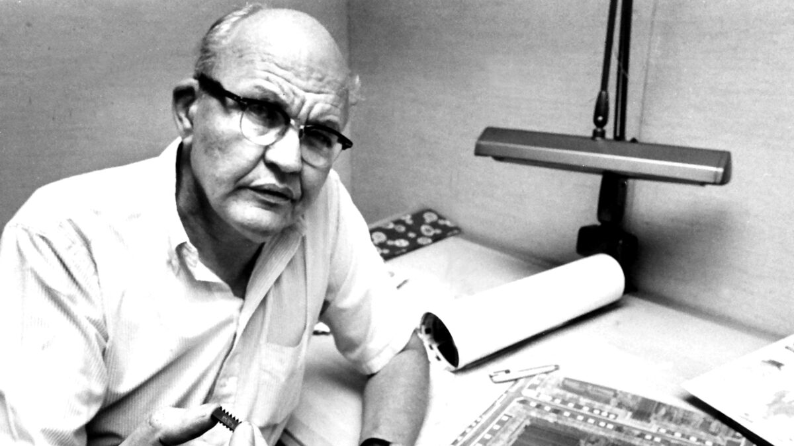

“I believe the best is yet to come.” - Jack Kilby during his lecture for Nobel Prize
Jack Kilby, who grew up in Great Bend, Kansas, lived from November 9, 1923 till June 20, 2005 at the age of 81 where he was able to amass a number of accomplishments, such as co-inventing the integrated circuit independently from Robert Noyce in 1958 at 35 years old. During his 81 years of life, Kilby was most notably awarded a Nobel Prize in Physics for his contribution towards the invention of the integrated circuit, alongside the National Medal of Science in 1969, the National Medal of Technology in 1990, the 1993 Kyoto Prize in Advanced Technology, and 9 honorary doctorate degrees from several universities. His contribution to the development of the integrated circuit gave rise to the production of microelectronics in the latter half of the twentieth century, paving the way for the Information Age and production of electronics that ultimately became extremely prominent in modern life.
Having earned his Bachelor of Electrical Engineering in 1947 at the University of Illinois and then his masters in 1950 at the University of Wisconsin, ultimately led him to his job at Texas Instruments. As a new employee at this company, Kilby was hired to work on the solution to the interconnection problem also known as the “tyranny of numbers,” where engineers struggled to improve the performance of computers due to the sheer number of components required. While working towards a solution, Kilby did not like Texas Instrument’s Micro-Module approach. Seeking a solution that better suited his style, he realized that the entire electronic assembly of circuits could be condensed into one unit by overlaying the components–of resistors, capacitors, and transistors–onto one piece of semiconducting material. With this realization, the computing industry and electronic industry as a whole would be able to reduce the size and cost of electronic components and devices needed for manufacturing goods which also lead to rapid technological advancement, paving the way towards the microchip and ultimately for the prediction known as “Moore’s Law.” Kilby would also work on teams that would then create the first handheld calculator and thermal printer that utilized the integrated circuit, adding to his accomplishments.
As a high school student, Kilby dabbled in photography, even going as far as building his own darkroom in his home to develop his own film. These photographs would produce photos for his high school and college yearbooks. After failing his entrance exam to the Massachusetts Institution of Technology, Kilby would then attend the University of Illinois as a electrical engineering major. Due to the outbreak of World War II, Kilby would then have some history in the army. At the end of his sophomore year in college, Kilby enlisted into the U.S. Army Signal Corps for two years. After finishing his duties, he returned to the University of Illinois to finish his degree. During his time in the army, he became a T-4 radio operator and a repairman. His role in the army became one of equal status to an army sergeant. When returning to school, he met his wife Barbara Annegers Kilby. The college sweethearts would later be married in 1948 and would then have two daughters, Ann and Janet.